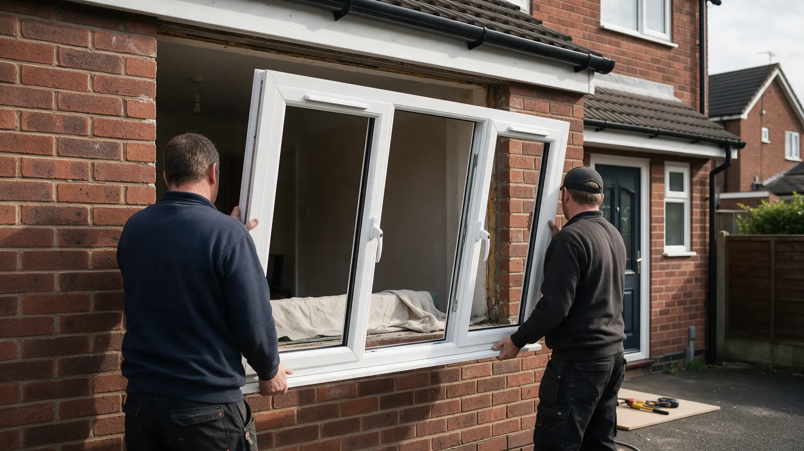
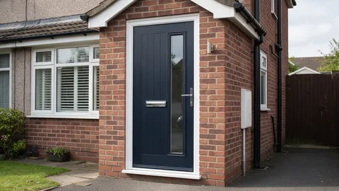
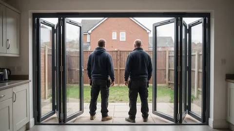
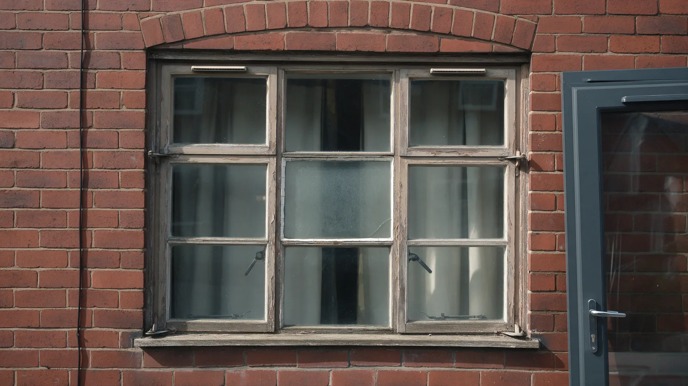
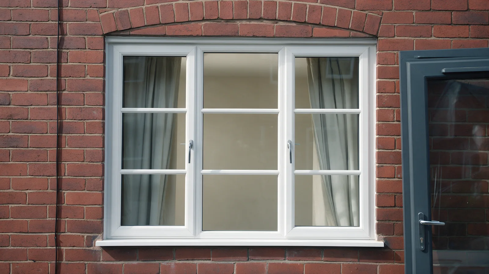
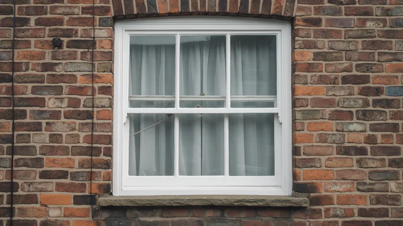
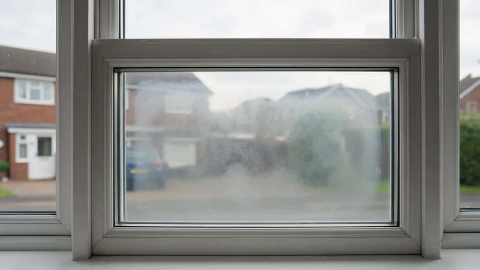
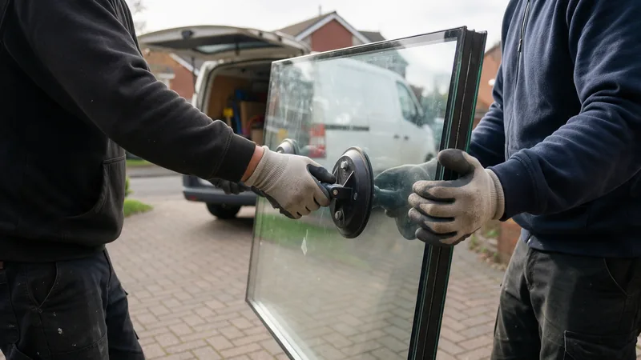
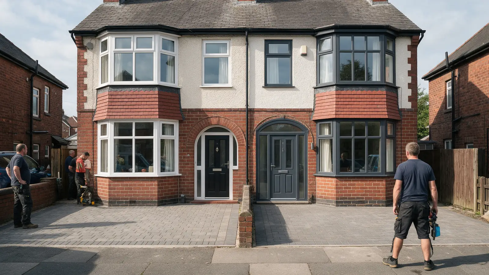

Windows and doors · Warrington and Widnes
Measured right.
Fitted like it is our own house.
Replacement windows, composite front doors, bifolds and patio doors, sash windows put right rather than ripped out, cloudy glass swapped and the repairs nobody else wants. Told straight before anything is ordered.
What we do
Six kinds of job.
 Generated photo
Generated photoReplacement windows
Whole houses and single openings. Measured properly, made to those sizes, and fitted without taking the plaster off with them.

Generated photoComposite and front doors
A solid door, a frame that fits the opening, and a lock that works with one hand full of shopping. Colour, glass and furniture your pick.

Generated photoBifold and patio doors
Bifolds that stack back and leave the opening clear, sliders that pass behind each other, and french doors where the opening is narrower.
 Generated photo
Generated photoSash window repair and replacement
Cords, weights, beads and draughts put right on the originals, or a new sash window made to the same sightlines when the timber has gone.
 Generated photo
Generated photoMisted glass unit replacement
Cloudy glass with the frame still sound is a new sealed unit, not a new window. Usually a short visit and the smaller job by a long way.
 Generated photo
Generated photoWindow and door repairs
Handles, hinges, locks, gaskets and the mechanism down the edge of a door. The parts wear out long before the frame does.
How it works
Four steps, no sales evening.
You tell us what you are looking at
A call, the chat box or the form. Which rooms, roughly how many openings, and whether it is the whole house or one window that has given up.
Somebody comes and measures
Every opening measured properly, the reveals and the cills looked at, and the awkward ones found now rather than on fitting day. Half an hour for a door, about an hour for a house.
You get it in writing
What is being made, in what colour, opening which way, and what happens to the old frames. No evening visit, no discount that expires at nine o'clock.
We fit it and clear up
Dust sheets down first, one opening at a time, everything that comes out goes on the van, and the floor is vacuumed before we leave Sample.


Illustrative, not a real job. Both pictures were generated for this demo from the same opening, once tired and once replaced, so the arch, the cill and the brick are the same in each.
Before and after
The house should still look like your house.
Drag the slider. On the left, a window that has had its day: the paint gone, the putty cracked and one pane fogged. On the right, the same opening with a new window in it.
Notice what has not changed. Same brick arch, same cill, same proportions, same number of panes. A replacement window that announces itself is a replacement window fitted by somebody who measured in a hurry.
See the rest of the workOur work
Sample jobs.
 Generated photoNew windows into a 1930s semiStockton Heath Sample
Generated photoNew windows into a 1930s semiStockton Heath Sample Generated photoBay put back as it wasLymm Sample
Generated photoBay put back as it wasLymm Sample
Generated photoSashes eased and cordedLymm Sample Generated photoFitting day, front roomGreat Sankey Sample
Generated photoFitting day, front roomGreat Sankey Sample Generated photoNew front door in a brick porchRuncorn Sample
Generated photoNew front door in a brick porchRuncorn Sample Generated photoFrench doors onto the patioLymm Sample
Generated photoFrench doors onto the patioLymm Sample Generated photoBifolds across the back of a kitchenStockton Heath Sample
Generated photoBifolds across the back of a kitchenStockton Heath Sample Generated photoSliding patio doorPenketh Sample
Generated photoSliding patio doorPenketh Sample
Generated photoCloudy unit swapped outRuncorn Sample
Generated photoSealed unit carried inGreat Sankey Sample Generated photoHandle and hinges, not a new windowLymm Sample
Generated photoHandle and hinges, not a new windowLymm Sample Generated photoBoarded up for the nightRuncorn Sample
Generated photoBoarded up for the nightRuncorn SampleEvery job here is a made up sample with a generated picture. Tap one to see it bigger.
Where we work
Warrington and Widnes.
Based in Warrington and Widnes Sample. These are the towns we cover most. Coverage is a sample for this demo. A bit outside it? Ask anyway, it depends on the week.

Generated photoWhat people say
Sample reviews.
Sample review
They did the front of the house in a day and I honestly could not tell where they had been. The bay looks like the one that came out, just newer, which is exactly what I wanted and what nobody else offered.
Marie, Stockton Heath
Sample review
Rang about four cloudy windows expecting to be sold a whole house of them. Got told the frames were fine and it was four units, and that was that. Took a morning.
Gareth, Runcorn
Sample review
Our sash windows had been painted shut for years. They eased them, put new cords in and draught stripped them, and now they open. No talk of ripping them out.
Sian, Lymm
Sample review
Back door would not lock without lifting it and leaning on it. Turned out to be the mechanism and the hinges, not the door. They said so, fixed it and I was back to work by eleven.
Dev, Great Sankey
Made up for this demo. Sashmoor does not exist, so neither do its customers.
Questions
What people ask us first.
How long does it take to fit new windows?
An ordinary house of windows is usually one day to two days on site, and a single window or door is a morning. The waiting part is the making rather than the fitting. Frames are made to the sizes taken at the survey, so there is normally a few weeks between somebody measuring up and the van turning up.
Each opening is open for well under an hour. We do them one at a time rather than taking the front of your house out all at once, so the house is never stood wide open while anybody has a brew.
Can you replace just the misted glass?
Usually, yes. A misted window means the seal round the edge of the sealed glass unit has failed and damp air has got between the panes. If the frame, the hinges and the handles are sound, the glass comes out and a new unit goes into the same frame.
New frames are the answer when the frame itself has gone, when the hinges and the mechanism are past it as well, or when you want something different from what is there. There is a whole article on how to tell the difference under Advice.
Will you deal with building regulations?
Replacement windows and doors in a home come under the building regulations. There are two routes: the installer certifies the work under a competent person scheme, or your local authority building control inspects and signs it off.
Whoever quotes should tell you plainly which route they use and what paperwork you get at the end, in writing, before you agree to anything. This is a demo site for a firm that does not exist, so it does not claim either route. Ask the question of anybody real who quotes you.
Do you remove the old frames?
Yes, and they go with us. Old frames, old glass, offcuts and packaging all leave on the van, and the floor gets swept and vacuumed before we do. Old windows come out whole wherever we can manage it, because that keeps the dust down and the plaster on the wall.
If you are decorating afterwards anyway, say so at the survey and we will leave the reveals ready rather than making them good twice.
Can you match my existing windows?
Usually close enough that a visitor would not spot which went in when. Frame colour, the way the windows open, the glazing bars, the handles and the sightlines can all be matched to what is already on the house.
Exactly the same is a harder promise. Profiles change over the years and so does white after twenty summers. We look at what you have at the survey and tell you plainly how close it will get, which is a better conversation than finding out on fitting day.
What if the glass goes at the weekend?
Ring and the first visit is making it safe rather than making it right: the broken glass cleared, the opening boarded or temporary glass in, and the door shutting and locking again. Measuring for the real glass happens after that, in daylight.
There is more on the Urgent help page, including what to do in the ten minutes before anybody arrives.
General guidance written for this demo, not advice on your house.
Advice
Worth reading first.
Generated photoMisted windows: new glass or new frames?
Cloudy glass almost never means you need new windows. Here is how to tell which half of the window has actually failed.
 Generated photo
Generated photoBifold or sliding patio doors
They cost about the same amount of thinking and they suit opposite rooms. The deciding question is not the one most people start with.
 Generated photo
Generated photoWhat happens on fitting day
What gets moved, how much mess there is, how long the hole in your wall is open, and the five minutes of preparation that help most.
About this demo
What this demo shows.
Sashmoor is not a real firm. The site is here to show a window and door fitter what Clockwork AI builds, in six parts.
No prices here. What it would cost for your firm is a conversation, not a web page. The Clockwork number is in the bar at the top.
Thinking about the windows or the front door?
Tell us what you are looking at and your postcode and we will book a survey. If the glass has gone or a door will not lock, use the urgent line instead.